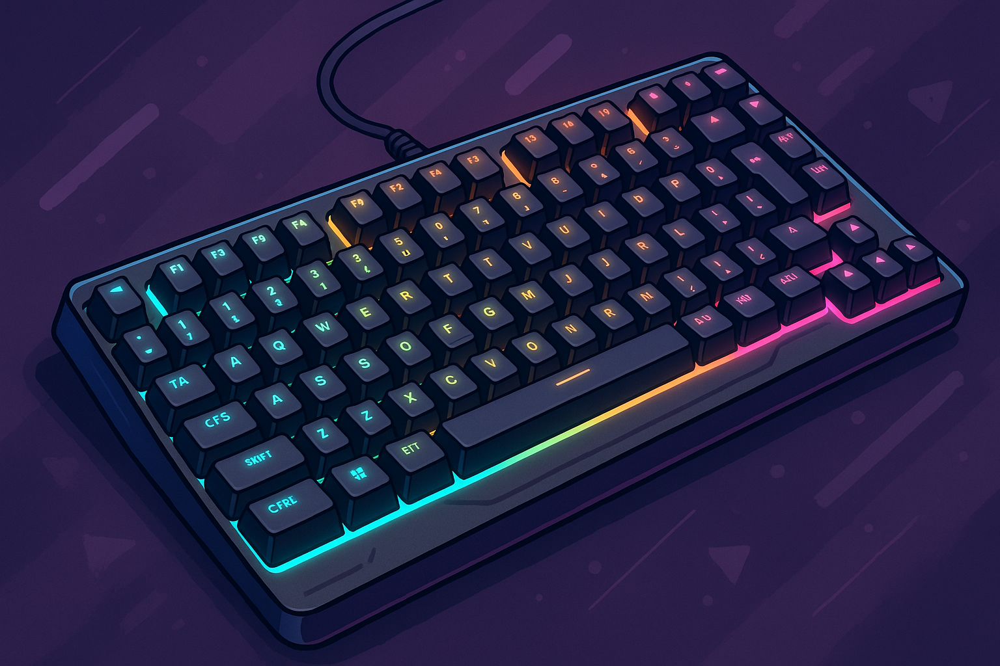

Mejores Teclados Gaming 2025 | Opiniones Reales
Hola, soy Carlos. Llevo más de 15 años trabajando como analista de productos tecnológicos, especializado en periféricos para gaming y productividad. A lo largo de mi trayectoria he probado cientos de teclados, y en este artículo quiero compartirte mis opiniones personales basadas en la experiencia real de uso, para que tomes la mejor decisión de compra.
Índice de Contenidos
- ¿Qué es un teclado gaming?
- ¿Por qué deberías comprar un teclado gaming?
- Comparativa de los mejores modelos
- ¿Cuál compraría yo?
- Preguntas frecuentes
¿Qué es un Teclado Gaming?
Un teclado gaming no es simplemente un teclado con luces. Se trata de dispositivos diseñados pensando en la precisión, la velocidad de respuesta y la resistencia. Cuando estás en medio de una partida, cada milisegundo cuenta, y un buen teclado puede ser la diferencia entre ganar o perder. Como gamer y analista, valoro mucho que un teclado gaming responda de forma rápida, cómoda y fiable.
¿Por Qué Deberías Comprar uno?
- Mayor velocidad de respuesta: en juegos de alta competición, tener un teclado con switches rápidos marca la diferencia.
- Durabilidad garantizada: he probado teclados gaming que aguantan millones de pulsaciones sin fallar.
- Mejor ergonomía: para sesiones largas, un teclado bien diseñado reduce la fatiga.
- Personalización y estética: no solo funcionalidad, también aportan estilo único a tu setup.
- Funcionalidades extra: teclas macro, perfiles de usuario y conexión inalámbrica avanzada.
Comparativa de los Mejores Teclados Gaming 2025
Logitech G413 SE Full-Size
Este teclado ha sido una grata sorpresa. Me encanta su estética minimalista y la robustez de su cuerpo de aluminio. Al usarlo, notas esa solidez que transmite confianza en cada pulsación. Personalmente lo recomiendo para quienes priorizan rendimiento puro por encima de las luces de colores.
- Pros: Excelente tacto mecánico, diseño elegante y muy resistente.
- Contras: Retroiluminación solo blanca (sin RGB).
EPOMAKER TH80 Pro
Probé este teclado durante un mes como mi teclado principal, y quedé fascinado. Su formato 75% lo hace muy cómodo, y la posibilidad de intercambiar los switches me permitió afinarlo a mi gusto. Si quieres personalizar al máximo tu experiencia, este modelo es para ti.
- Pros: Altísima personalización, conectividad bluetooth y USB, excelente calidad general.
- Contras: Precio algo superior a otras opciones más básicas.
Mars Gaming MKMINI
Ideal si tienes poco espacio o si quieres un teclado gaming asequible para empezar. Me gusta mucho lo bien que se siente a pesar de ser tan compacto y económico. Perfecto para setups minimalistas o para llevártelo fácilmente a cualquier parte.
- Pros: Tamaño compacto, precio muy competitivo.
- Contras: Falta de teclado numérico.
Corsair K70 PRO Mini Wireless
Este teclado es sinónimo de calidad premium. Lo he utilizado en sesiones de juego maratonianas y su rendimiento inalámbrico es impecable. Si tienes presupuesto y quieres un teclado de alto nivel, este Corsair es una opción ganadora.
- Pros: Excelente autonomía, materiales de primera calidad.
- Contras: Precio elevado.
Razer BlackWidow V3 Pro
Uno de los mejores teclados de tamaño completo con conexión inalámbrica sólida que he probado. Ideal para quienes buscan sensaciones mecánicas premium sin cables.
- Pros: Excelente tacto, conectividad segura.
- Contras: Coste y peso altos.
¿Cuál compraría yo?
Después de meses de pruebas, mi elección personal es el EPOMAKER TH80 Pro. Ofrece la mejor combinación de calidad, personalización, tamaño compacto y conexión inalámbrica. Es el teclado que uso tanto para trabajar como para jugar, por su fiabilidad y comodidad excepcionales.
Preguntas Frecuentes (FAQ)
¿Vale la pena invertir en un teclado gaming caro?
Sí, si eres un usuario intensivo o gamer competitivo. Los teclados de gama alta ofrecen mejor durabilidad, personalización y experiencia de uso.
¿Qué diferencia hay entre un teclado mecánico y uno de membrana?
El mecánico tiene interruptores individuales en cada tecla, ofreciendo mejor respuesta y vida útil más larga. El de membrana es más barato pero menos preciso.
¿Son buenos los teclados inalámbricos para gaming?
Hoy en día sí, gracias a tecnologías como Bluetooth 5.0 o conexiones propietarias de alta velocidad como Lightspeed de Logitech.